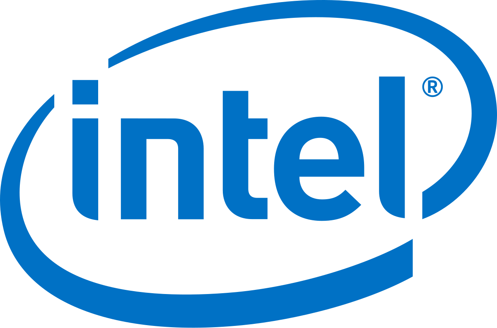

⚙️ Tudo o que você precisa saber sobre Processadores de Desktop
⚙️ Tudo o que você precisa saber sobre Processadores de Desktop
O que é um processador?
O processador (CPU - Unidade Central de Processamento) é o "cérebro" do computador. Ele executa cálculos, comandos e gerencia todas as tarefas do sistema. Sem ele, o PC não funciona.
Principais marcas
Intel – muito popular, com modelos como:v
Core i3, i5, i7, i9
Pentium e Celeron (básicos)
Linha Xeon (profissional/servidor)
AMD – concorrente forte com ótimo custo-benefício:
Ryzen 3, 5, 7, 9
Athlon (básicos)
Threadripper e EPYC (profissionais)
Características principais
Termo O que significa
Clock (GHz) Velocidade básica de operação. Mais GHz nem sempre = mais desempenho.
Núcleos (Cores) Cada núcleo executa tarefas. Mais núcleos = melhor multitarefa.
Threads São como "filas virtuais" de execução. Algumas CPUs têm 2 threads por núcleo.
Cache Memória rápida embutida no processador. Quanto mais, melhor.
TDP (W) Consumo térmico. Afeta aquecimento e necessidade de cooler.
Soquete e compatibilidade
Cada processador só encaixa em placas com soquete compatível, por exemplo:

Intel LGA 1200, LGA 1700

AMD AM4, AM5
Além disso, o chipset da placa-mãe precisa suportar o modelo de CPU.
Tipos de uso e recomendação
Uso Indicação
Tarefas básicas (internet, Word) Intel i3 / AMD Ryzen 3
Jogos e uso geral Intel i5 / AMD Ryzen 5 ou superior
Edição de vídeo, 3D, multitarefa Intel i7/i9 / AMD Ryzen 7/9
Workstation e servidores Xeon / Threadripper / EPYC
Dicas na hora de escolher
Verifique o soquete da placa-mãe antes de comprar.
Não esqueça do sistema de refrigeração compatível.
Mais núcleos é melhor para multitarefa e produtividade.
Single-core alto é importante para jogos.